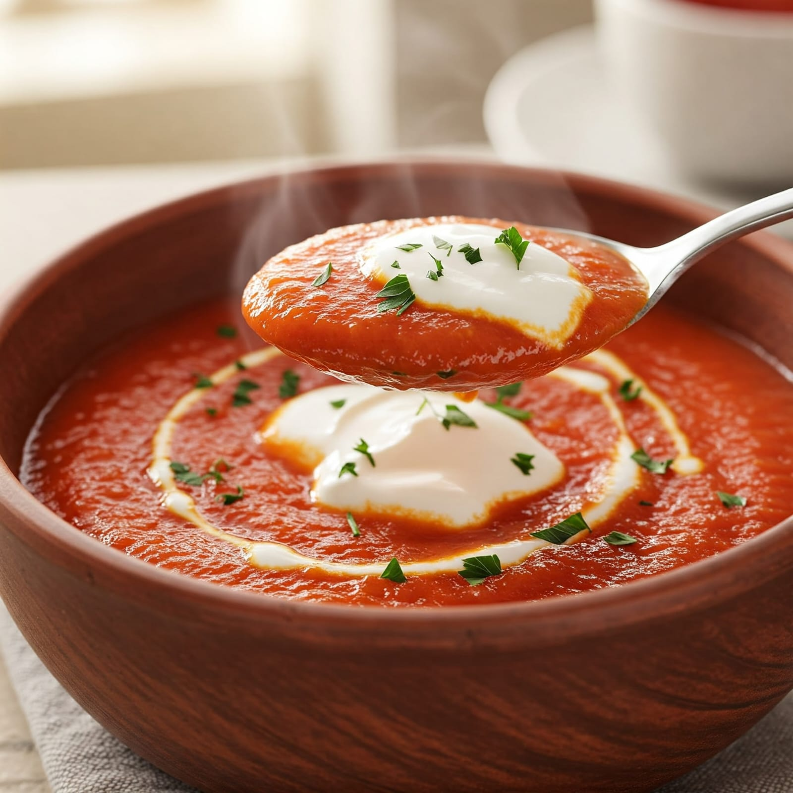

ציר עוף עשיר עם ירקות שורש, איטריות או קניידלך
מרק סמיך עם עדשים, ירקות שורש ותיבול מזרחי
מרק חלק ועשיר עם בטטה, גזר ושמנת מתוקה
מרק חורפי מחמם עם תערובת פטריות ובצל
שילוב של גזר, דלעת, בטטה וקישוא עם תיבול עדין